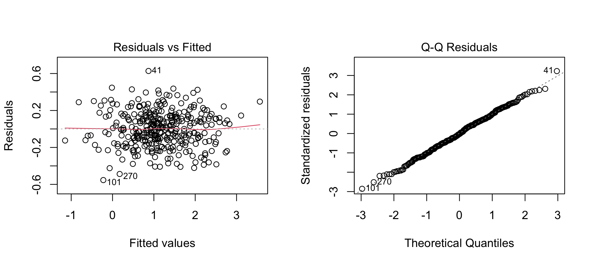

CRP is positive and strongly right-skewed, so a log-scale model is more appropriate than modeling raw CRP directly.
\[ \log(CRP_{12}) = \beta_0+\beta_1\log(CRP_0)+\beta_2I(A)+\beta_3I(B)+\varepsilon. \]
crp_anc <- dat |>
filter(!is.na(crp_baseline_mg_L),!is.na(crp_week12_mg_L),
crp_baseline_mg_L>0,crp_week12_mg_L>0)
crp_common <- lm(log(crp_week12_mg_L)~ log(crp_baseline_mg_L)+treatment_arm,data=crp_anc)
crp_int <- lm(log(crp_week12_mg_L)~ log(crp_baseline_mg_L)*treatment_arm,data=crp_anc)
hc3_interaction_test(crp_int)
#>
#> Linear hypothesis test:
#> log(crp_baseline_mg_L):treatment_armDrug_A = 0
#> log(crp_baseline_mg_L):treatment_armDrug_B = 0
#>
#> Model 1: restricted model
#> Model 2: log(crp_week12_mg_L) ~ log(crp_baseline_mg_L) * treatment_arm
#>
#> Note: Coefficient covariance matrix supplied.
#>
#> Res.Df Df F Pr(>F)
#> 1 332
#> 2 330 2 1.05 0.35The interaction is not needed, so the common-slope log model is retained.
Because CRP is modeled on the log scale, emmeans() estimates baseline-adjusted treatment means on that scale. contrast() then compares each active treatment with Control.
crp_emm <- emmeans::emmeans(
crp_common,~treatment_arm,
vcov.=sandwich::vcovHC(crp_common,type="HC3")
)
crp_ctrl <- summary(
contrast(crp_emm,method="trt.vs.ctrl",ref=1,adjust="holm"),
infer=c(TRUE,TRUE)
) |>
mutate(ratio=exp(estimate),
ratio_low=exp(lower.CL),
ratio_high=exp(upper.CL)) |>
dplyr::select(contrast,ratio,ratio_low,ratio_high,p.value)
kbl(crp_ctrl,digits=3,
caption="Adjusted CRP geometric-mean ratios")| contrast | ratio | ratio_low | ratio_high | p.value |
|---|---|---|---|---|
| Drug_A - Control | 0.904 | 0.853 | 0.958 | 0 |
| Drug_B - Control | 0.804 | 0.758 | 0.854 | 0 |
The treatment contrasts are first estimated as differences on the log scale. Exponentiating these differences converts them to ratios of adjusted geometric means:
\[ \text{Ratio} = \frac{\text{adjusted geometric mean in treatment}} {\text{adjusted geometric mean in Control}}. \]
A ratio of 1 indicates no difference between groups. A ratio of 0.80 means the active-treatment group has about 20% lower CRP, while a ratio of 1.25 means about 25% higher CRP, after adjustment for baseline CRP.

The meaning of a treatment effect depends on the model:
Always interpret the treatment effect according to the model that was fitted.